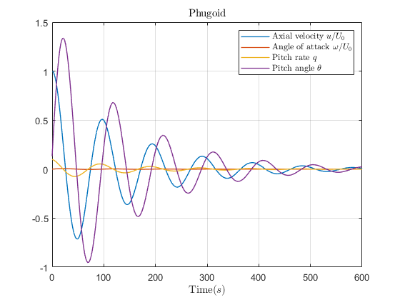

Contents
clear all; clc;
airplane config:
%Nominal Configuration m = 7063; %[kg] Xcg = 0.22; Ixx = 4951.7; %[kg.m^2] Iyy = 108511; %[kg.m^2] Izz = 111244; %[kg.m^2] g = 9.81; %[m.s^(-2)] % Flight conditions H = 12192; % Altitude [m] rho = 0.302; % Air Density [km/m^3] M = 0.80; % Mach Number [without unit] U0 = 235.9; % Velocity [m/s] theta0 = 7.5 ; % Initial attitude theta0 [deg] % Geometric Data S = 18.58; % Wing Area [m^2] b = 6.82; % Wing Span [m] C = 3.13; % Wing Chord [m] AR = 2.5; % Aspect ratio [without unit] e = 0.93; % Oswald factor [without unit] % Steady state conditions [without unit] CL0 = 0.42; CD0 = 0.13; CTx0 = 0.025; Cm0 = 0; Cmt0 = 0; % Aerodynamic derivatives [without unit] Cmu = -0.1; Cmalpha = -1; Cmalphad = -1.6; Cmq = -12.5; Cmtu = 0;Cmtalpha = 0; CLu = 0; CLalpha = 4; CLalphad = 0; CLq = 0; CDu = 0; CDalpha = 0.8; CDalphad = 0; CDq = 0; CTu = 0; CLdelta_e = 1.1; CDdelta_e = 0; Cmdelta_e = -1.5; q = (1/2)*(rho)*(U0)^2;
QUESTION 1
Elements of matrix A
Xu = -q*S/(m*U0)*(2*CD0+CDu);
Xw = q*S/(m*U0)*(CL0-2/(pi*e*AR)*CL0*CLalpha);
Zu = -q*S/(m*U0)*(2*CL0 + M^2/(1-M^2)*CL0);
Zw = -q*S/(m*U0)*(CD0+CLalpha);
Zq = q*S*C/(2*m*U0)*CLq;
Mu = q*S*C/(Iyy*U0)*Cmu;
Mw = q*S*C/(Iyy*U0)*Cmalpha;
Mwd = q*S*C^2/(2*Iyy*U0^2)*Cmalphad;
Mq = q*S*C^2/(2*Iyy*U0)*Cmq;
% Elements of matrix B
CMdelta_e = Cmdelta_e/M;
CLdelta_T = 0; CDdelta_T = 0; CMdelta_T = 0;
Xdelta_e = q*S/(m*U0)*CDdelta_e;
Zdelta_e= q*S/(m*U0)*CLdelta_e;
Mdelta_e = q*S*C/(Iyy*U0)*CMdelta_e;
Xdelta_T = q*S/(m*U0)*CDdelta_T;
Zdelta_T = q*S/(m*U0)*CLdelta_T;
Mdelta_T = q*S*C/(Iyy*U0)*CMdelta_T;
QUESTION2
A = [Xu Xw 0 -g*cos(deg2rad(theta0));
Zu Zw U0 -g*sin(deg2rad(theta0));
Mu+Mwd*Zu Mw+Mwd*Zw Mq+U0*Mwd -Mwd*g*sin(deg2rad(theta0));
0 0 1 0];
B = [Xdelta_e Xdelta_T;
Zdelta_e Zdelta_T;
Mdelta_e+Mwd*Zdelta_e Mdelta_T+Mwd*Zdelta_T;
0 0];
QUESTION3
CS = poly(A);
QUESTION4
eig_vals = eig(A);
QUESTION5
Short period mode
wnSP = sqrt(eig_vals(1)*eig_vals(2)); % Natural Frequency zetaSP = (-eig_vals(1)-eig_vals(2))/(2*wnSP); % Damping Factor % % Phugoid mode wnPM = sqrt(eig_vals(3)*eig_vals(4)); % Natural Frequency zetaPM = (-eig_vals(3)-eig_vals(4))/(2*wnPM); % Damping Factor % From there: https://courses.cit.cornell.edu/mae5070/DynamicStability.pdf % p10 in pdf (real p84) % zetaSP = sqrt(1/(1+(imag(eig_vals(1)) / real(eig_vals(1)))^2)); % zetaPM = sqrt(1/(1+(imag(eig_vals(3)) / real(eig_vals(3)))^2)); % % wnSP = -real(eig_vals(1))/zetaSP; % wnPM = -real(eig_vals(3))/zetaPM;
Question 6 PH
h = 0.0001; t=(0:h:600); % phugoid values a1_u_pm = U0; a2_u_pm = (0.1 + zetaPM * wnPM * a1_u_pm)/(wnPM * sqrt(1 - zetaPM^2)); curve_gen_func_u_pm = exp(-zetaPM*wnPM*t) .* (a1_u_pm * cos(wnPM * ... sqrt(1 - zetaPM^2) * t) + a2_u_pm * sin(wnPM * sqrt(1 - zetaPM^2) * t)); a1_w_pm = 0; a2_w_pm = (0.1 + zetaPM * wnPM * a1_w_pm)/(wnPM * sqrt(1 - zetaPM^2)); curve_gen_func_w_pm = exp(-zetaPM*wnPM*t) .* (a1_w_pm * cos(wnPM * ... sqrt(1 - zetaPM^2) * t) + a2_w_pm * sin(wnPM * sqrt(1 - zetaPM^2) * t)); a1_theta_pm = deg2rad(theta0); a2_theta_pm = (0.1 + zetaPM * wnPM * a1_theta_pm)/(wnPM * sqrt(1 - zetaPM^2)); curve_gen_func_theta_pm = exp(-zetaPM*wnPM*t) .* (a1_theta_pm * cos(wnPM * ... sqrt(1 - zetaPM^2) * t) + a2_theta_pm * sin(wnPM * sqrt(1 - zetaPM^2) * t)); curve_gen_func_q_pm = diff(curve_gen_func_theta_pm)/h; % short period plot h = 0.0001; tt=(0:h:10); a1_u_sp = U0; a2_u_sp = (0.1 + zetaSP * wnSP * a1_u_pm)/(wnSP * sqrt(1 - zetaSP^2)); curve_gen_func_u_sp = exp(-zetaSP*wnSP*tt) .* (a1_u_sp * cos(wnSP * ... sqrt(1 - zetaSP^2) * tt) + a2_u_sp * sin(wnSP * sqrt(1 - zetaSP^2) * tt)); a1_w_sp = 0; a2_w_sp = (0.1 + zetaSP * wnSP * a1_w_sp)/(wnSP * sqrt(1 - zetaSP^2)); curve_gen_func_w_sp = exp(-zetaSP*wnSP*tt) .* (a1_w_sp * cos(wnSP * ... sqrt(1 - zetaSP^2) * tt) + a2_w_sp * sin(wnSP * sqrt(1 - zetaSP^2) * tt)); a1_theta_sp = deg2rad(theta0); a2_theata_sp = (0.1 + zetaSP * wnSP * a1_theta_sp)/(wnSP * sqrt(1 - zetaSP^2)); curve_gen_func_theta_sp = exp(-zetaSP*wnSP*tt) .* (a1_theta_sp * cos(wnSP * ... sqrt(1 - zetaSP^2) * tt) + a2_theata_sp * sin(wnSP * sqrt(1 - zetaSP^2) * tt)); curve_gen_func_q_sp = diff(curve_gen_func_theta_sp)/h; % plot fig1 = figure(1) plot(t, curve_gen_func_u_pm, 'LineWidth', 1); grid on x = xlabel('Time($s$)'); title('Axial velocity $u$ -- Phugoid','Interpreter','latex'); set(x, 'interpreter', 'latex'); fig2 = figure(2) plot(t, curve_gen_func_w_pm/U0, 'Color', [0.8500, 0.3250, 0.0980], 'LineWidth', 1); grid on x = xlabel('Time($s$)'); title('Angle of attack $\omega/U_0$ -- Phugoid','Interpreter','latex'); set(x, 'interpreter', 'latex'); fig3 = figure(3) plot(t(:,1:length(curve_gen_func_q_pm)), curve_gen_func_q_pm, 'Color', [0.9290, 0.6940, 0.1250], 'LineWidth', 1); grid on x = xlabel('Time($s$)'); title('Pitch rate $q$ -- Phugoid','Interpreter','latex'); set(x, 'interpreter', 'latex'); fig4 = figure(4) plot(t, curve_gen_func_theta_pm, 'Color', [0.4940, 0.1840, 0.5560], 'LineWidth', 1); grid on x = xlabel('Time($s$)'); title('Pitch angle $\theta$ -- Phugoid','Interpreter','latex'); set(x, 'interpreter', 'latex'); fig5 = figure(5) plot(t, curve_gen_func_u_pm/U0, 'LineWidth', 1); hold on plot(t, curve_gen_func_w_pm/U0, 'Color', [0.8500, 0.3250, 0.0980], 'LineWidth', 1); plot(t(:,1:length(curve_gen_func_q_pm)), curve_gen_func_q_pm, 'Color', [0.9290, 0.6940, 0.1250], 'LineWidth', 1); plot(t, curve_gen_func_theta_pm, 'Color', [0.4940, 0.1840, 0.5560], 'LineWidth', 1); hold off lu = legend('Axial velocity $u/U_0$', 'Angle of attack $\omega/U_0$', ... 'Pitch rate $q$', 'Pitch angle $\theta$'); grid on x = xlabel('Time($s$)'); title('Phugoid','Interpreter','latex'); set(lu, 'interpreter', 'latex'); set(x, 'interpreter', 'latex'); fig6 = figure(6) plot(tt, curve_gen_func_u_sp, 'LineWidth', 1); grid on x = xlabel('Time($s$)'); title('Axial velocity $u$ -- Short Periode', 'Interpreter','latex'); set(x, 'interpreter', 'latex'); fig7 = figure(7) plot(tt, curve_gen_func_w_sp/U0, 'Color', [0.8500, 0.3250, 0.0980], 'LineWidth', 1); grid on x = xlabel('Time($s$)'); title('Angle of attack $\omega/U_0$ -- Short Periode','Interpreter','latex'); set(x, 'interpreter', 'latex'); fig8 = figure(8) plot(tt(:,1:length(curve_gen_func_q_sp)), curve_gen_func_q_sp, 'Color', [0.9290, 0.6940, 0.1250], 'LineWidth', 1); grid on x = xlabel('Time($s$)'); title('Pitch rate $q$ -- Short Periode','Interpreter','latex'); set(x, 'interpreter', 'latex'); fig9 = figure(9) plot(tt, curve_gen_func_theta_sp, 'Color', [0.4940, 0.1840, 0.5560], 'LineWidth', 1); grid on x = xlabel('Time($s$)'); title('Pitch angle $\theta$ -- Short Periode','Interpreter','latex'); set(x, 'interpreter', 'latex'); fig10 = figure(10) plot(tt, curve_gen_func_u_sp/U0, 'LineWidth', 1); hold on plot(tt, curve_gen_func_w_sp/U0, 'Color', [0.8500, 0.3250, 0.0980], 'LineWidth', 1); plot(tt(:,1:length(curve_gen_func_q_sp)), curve_gen_func_q_sp, 'Color', [0.9290, 0.6940, 0.1250], 'LineWidth', 1); plot(tt, curve_gen_func_theta_sp, 'Color', [0.4940, 0.1840, 0.5560], 'LineWidth', 1); hold off lu = legend('Axial velocity $u/U_0$', 'Angle of attack $\omega/U_0$', ... 'Pitch rate $q$', 'Pitch angle $\theta$'); grid on x = xlabel('Time($s$)'); title('Short Period','Interpreter','latex'); set(lu, 'interpreter', 'latex'); set(x, 'interpreter', 'latex'); commandwindow
fig1 =
Figure (1) with properties:
Number: 1
Name: ''
Color: [0.9400 0.9400 0.9400]
Position: [1000 918 560 420]
Units: 'pixels'
Use GET to show all properties
fig2 =
Figure (2) with properties:
Number: 2
Name: ''
Color: [0.9400 0.9400 0.9400]
Position: [1000 918 560 420]
Units: 'pixels'
Use GET to show all properties
fig3 =
Figure (3) with properties:
Number: 3
Name: ''
Color: [0.9400 0.9400 0.9400]
Position: [1000 918 560 420]
Units: 'pixels'
Use GET to show all properties
fig4 =
Figure (4) with properties:
Number: 4
Name: ''
Color: [0.9400 0.9400 0.9400]
Position: [1000 918 560 420]
Units: 'pixels'
Use GET to show all properties
fig5 =
Figure (5) with properties:
Number: 5
Name: ''
Color: [0.9400 0.9400 0.9400]
Position: [1000 918 560 420]
Units: 'pixels'
Use GET to show all properties
fig6 =
Figure (6) with properties:
Number: 6
Name: ''
Color: [0.9400 0.9400 0.9400]
Position: [1000 918 560 420]
Units: 'pixels'
Use GET to show all properties
fig7 =
Figure (7) with properties:
Number: 7
Name: ''
Color: [0.9400 0.9400 0.9400]
Position: [1000 918 560 420]
Units: 'pixels'
Use GET to show all properties
fig8 =
Figure (8) with properties:
Number: 8
Name: ''
Color: [0.9400 0.9400 0.9400]
Position: [1000 918 560 420]
Units: 'pixels'
Use GET to show all properties
fig9 =
Figure (9) with properties:
Number: 9
Name: ''
Color: [0.9400 0.9400 0.9400]
Position: [1000 918 560 420]
Units: 'pixels'
Use GET to show all properties
fig10 =
Figure (10) with properties:
Number: 10
Name: ''
Color: [0.9400 0.9400 0.9400]
Position: [1000 918 560 420]
Units: 'pixels'
Use GET to show all properties
 Transfert functions
syms s; XPM = [s-Xu g; Zu/U0 s]; DetPM = det(vpa(XPM)); XSP = [s-Zw -U0; -(Mw+Mwd*Zw) s-(Mq+Mwd*U0)]; DetSP = det(vpa(XSP)); % U(s)/delta_e(s) numeratorU = s * Xdelta_e - g * Zdelta_e; TF_U = vpa(numeratorU / DetPM) % theta(s)/delta_e(s) numeratorT = -(Zu / U0) * Xdelta_e + (s - Xu) * Zdelta_e; TF_t = vpa(numeratorT / DetPM) % W(s)/delta_e(s) numeratorW = (s - (Mq + Mwd * U0)) * Zdelta_e + U0 * (Mdelta_e + Mwd * Zdelta_e); TF_W = vpa(numeratorW / DetSP) % q(s)/delta_e(s) numeratorQ = (Mw + Mwd * Zw) * Zdelta_e + (s - Zw) * (Mdelta_e + Mwd * Zdelta_e); TF_q = vpa(numeratorQ / DetSP)
TF_U = -1.0111674572705648955661672516726/(1.0*s^2 + 0.024363222953419229332983064750806*s + 0.006182842109018831454033196526332) TF_t = (0.10307517403369673147928153866815*s + 0.0025112434459454419402743696233333)/(1.0*s^2 + 0.024363222953419229332983064750806*s + 0.006182842109018831454033196526332) TF_W = (0.10307517403369673147928153866815*s - 8.4055473746047911470278231554159)/(1.0*s^2 + 0.80826469478255641432085099040705*s + 4.6480186987648707630341476936763) TF_q = -(1.0*(0.035815893439630416827945680324774*s + 0.015820456770829014185929947675225))/(1.0*s^2 + 0.80826469478255641432085099040705*s + 4.6480186987648707630341476936763)